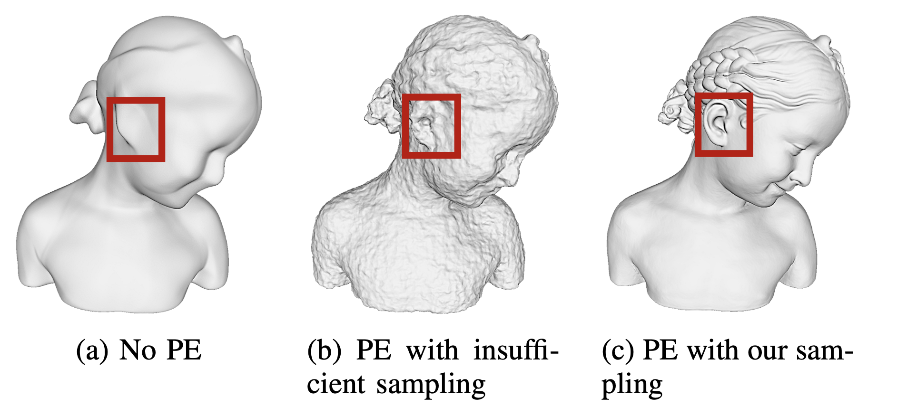

On Optimal Sampling for Learning SDF Using MLPs Equipped with Positional Encoding
- 1The University of Hong Kong,
- 2The University of British Columbia,
- 3The City University of Hong Kong,
- 4Zhejiang University,
- 5Texas A&M University
-
 Paper
Paper
Abstract
Neural implicit fields, such as the neural signed distance field (SDF) of a shape, have emerged as a powerful representation for many applications, e.g., encoding a 3D shape and performing collision detection. Typically, implicit fields are encoded by Multi-layer Perceptrons (MLP) with positional encoding (PE) to capture high-frequency geometric details. However, a notable side effect of such PE-equipped MLPs is the noisy artifacts present in the learned implicit fields. While increasing the sampling rate could in general mitigate these artifacts, in this paper we aim to explain this adverse phenomenon through the lens of Fourier analysis. We devise a tool to determine the appropriate sampling rate for learning an accurate neural implicit field without undesirable side effects. Specifically, we propose a simple yet effective method to estimate the intrinsic frequency of a given network with randomized weights based on the Fourier analysis of the network's responses. It is observed that a PE-equipped MLP has an intrinsic frequency much higher than the highest frequency component in the PE layer. Sampling against this intrinsic frequency following the Nyquist-Sannon sampling theorem allows us to determine an appropriate training sampling rate. We empirically show in the setting of SDF fitting that this recommended sampling rate is sufficient to secure accurate fitting results, while further increasing the sampling rate would not further noticeably reduce the fitting error. Training PE-equipped MLPs simply with our sampling strategy leads to performances superior to the existing methods.
